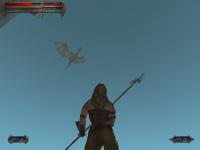
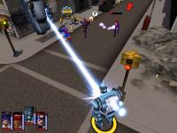

Python Pygame Introduction¶
- Author:
Pete Shinners
- Contact:
This article is an introduction to the pygame library for Python programmers. The original version appeared in the PyZine volume 1 issue 3. This version contains minor revisions, to create an all-around better article. Pygame is a Python extension library that wraps the SDL library and its helpers.
HISTORY¶
Pygame started in the summer of 2000. Being a C programmer of many years, I discovered both Python and SDL at about the same time. You are already familiar with Python, which was at version 1.5.2. You may need an introduction to SDL, which is the Simple DirectMedia Layer. Created by Sam Lantinga, SDL is a cross-platform C library for controlling multimedia, comparable to DirectX. It has been used for hundreds of commercial and open source games. I was impressed at how clean and straightforward both projects were and it wasn't long before I realized mixing Python and SDL was an interesting proposal.
I discovered a small project already under-way with exactly the same idea, PySDL. Created by Mark Baker, PySDL was a straightforward implementation of SDL as a Python extension. The interface was cleaner than a generic SWIG wrapping, but I felt it forced a "C style" of code. The sudden death of PySDL prompted me to take on a new project of my own.
I wanted to put together a project that really took advantage of Python. My goal was to make it easy to do the simple things, and straightforward to do the difficult things. Pygame was started in October, 2000. Six months later pygame version 1.0 was released.
TASTE¶
I find the best way to understand a new library is to jump straight into an example. In the early days of pygame, I created a bouncing ball animation with 7 lines of code. Let's take a look at a friendlier version of that same thing. This should be simple enough to follow along, and a complete breakdown follows.
import sys, pygame
pygame.init()
size = width, height = 320, 240
speed = [2, 2]
black = 0, 0, 0
screen = pygame.display.set_mode(size)
ball = pygame.image.load("intro_ball.gif")
ballrect = ball.get_rect()
while True:
for event in pygame.event.get():
if event.type == pygame.QUIT: sys.exit()
ballrect = ballrect.move(speed)
if ballrect.left < 0 or ballrect.right > width:
speed[0] = -speed[0]
if ballrect.top < 0 or ballrect.bottom > height:
speed[1] = -speed[1]
screen.fill(black)
screen.blit(ball, ballrect)
pygame.display.flip()
This is as simple as you can get for a bouncing animation.
First we see importing and initializing pygame is nothing noteworthy.
The import pygame imports the package with all the available
pygame modules.
The call to pygame.init() initializes each of these modules.
Make sure the gif file of the bouncing ball is in the same folder
as the code block.
On line 4 we set the size of the display window, for best
results you can change these numbers to match your own monitor's
resolution.
On line 8 we create a
graphical window with the call to pygame.display.set_mode().
Pygame and SDL make this easy by defaulting to the best graphics modes
for the graphics hardware. You can override the mode and SDL will
compensate for anything the hardware cannot do. Pygame represents
images as Surface objects.
The display.set_mode() function creates a new Surface
object that represents the actual displayed graphics. Any drawing you
do to this Surface will become visible on the monitor.
At line 10 we load
our ball image. Pygame supports a variety of image formats through the
SDL_image library, including BMP, JPG, PNG, TGA, and GIF.
The pygame.image.load() function
returns us a Surface with the ball data. The Surface will keep any
colorkey or alpha transparency from the file. After loading the ball
image we create a variable named ballrect. Pygame comes with a
convenient utility object type named Rect,
which represents a rectangular area. Later, in the animation part of
the code, we will see what the Rect objects can do.
At this point, line 13, our program is initialized and ready to run. Inside an infinite loop we check for user input, move the ball, and then draw the ball. If you are familiar with GUI programming, you have had experience with events and event loops. In pygame this is no different, we check if a QUIT event has happened. If so we simply exit the program, pygame will ensure everything is cleanly shutdown.
It is time to update our position for the ball. Lines 17 moves the ballrect variable by the current speed. Lines 18 thru 21 reverse the speed if the ball has moved outside the screen. Not exactly Newtonian physics, but it is all we need.
On line 23 we erase the screen by filling it with a black RGB color. If you have never worked with animations this may seem strange. You may be asking "Why do we need to erase anything, why don't we just move the ball on the screen?" That is not quite the way computer animation works. Animation is nothing more than a series of single images, which when displayed in sequence do a very good job of fooling the human eye into seeing motion. The screen is just a single image that the user sees. If we did not take the time to erase the ball from the screen, we would actually see a "trail" of the ball as we continuously draw the ball in its new positions.
On line 24 we draw the ball image onto the screen.
Drawing of images is handled by the
Surface.blit() method.
A blit basically means copying pixel colors from one image to another.
We pass the blit method a source Surface
to copy from, and a position to place the source onto the destination.
The last thing we need to do is actually update the visible display.
Pygame manages the display with a double buffer. When we are finished
drawing we call the pygame.display.flip()Update the full display Surface to the screen method.
This makes everything we have drawn on the screen Surface
become visible. This buffering makes sure we only see completely drawn
frames on the screen. Without it, the user would see the half completed
parts of the screen as they are being created.
That concludes this short introduction to pygame. Pygame also has modules to do things like input handling for the keyboard, mouse, and joystick. It can mix audio and decode streaming music. With the Surfaces you can draw simple shapes, rotate and scale the picture, and even manipulate the pixels of an image in realtime as numpy arrays. Pygame also has the ability to act as a cross platform display layer for PyOpenGL. Most of the pygame modules are written in C, few are actually done in Python.
The pygame website has full reference documentation for every pygame function and tutorials for all ranges of users. The pygame source comes with many examples of things like monkey punching and UFO shooting.
PYTHON AND GAMING¶
"Is Python suitable for gaming?" The answer is, "It depends on the game."
Python is actually quite capable at running games. It will likely even surprise you how much is possible in under 30 milliseconds. Still, it is not hard to reach the ceiling once your game begins to get more complex. Any game running in realtime will be making full use of the computer.
Over the past several years there has been an interesting trend in game development, the move towards higher level languages. Usually a game is split into two major parts. The game engine, which must be as fast as possible, and the game logic, which makes the engine actually do something. It wasn't long ago when the engine of a game was written in assembly, with portions written in C. Nowadays, C has moved to the game engine, while often the game itself is written in higher level scripting languages. Games like Quake3 and Unreal run these scripts as portable bytecode.
In early 2001, developer Rebel Act Studios finished their game, Severance: Blade of Darkness. Using their own custom 3D engine, the rest of the game is written with Python. The game is a bloody action 3rd person perspective fighter. You control medieval warriors into intricate decapitating combination attacks while exploring dungeons and castles. You can download third party add-ons for this game, and find they are nothing more than Python source files.
More recently, Python has been used in a variety of games like Freedom Force, and Humungous' Backyard Sports Series.
Pygame and SDL serve as an excellent C engine for 2D games. Games will still find the largest part of their runtime is spent inside SDL handling the graphics. SDL can take advantage of graphics hardware acceleration. Enabling this can change a game from running around 40 frames per second to over 200 frames per second. When you see your Python game running at 200 frames per second, you realize that Python and games can work together.
It is impressive how well both Python and SDL work on multiple platforms. For example, in May of 2001 I released my own full pygame project, SolarWolf, an arcade style action game. One thing that has surprised me is that one year later there has been no need for any patches, bug fixes, or updates. The game was developed entirely on windows, but runs on Linux, Mac OSX, and many Unixes without any extra work on my end.
Still, there are very clear limitations. The best way to manage hardware accelerated graphics is not always the way to get fastest results from software rendering. Hardware support is not available on all platforms. When a game gets more complex, it often must commit to one or the other. SDL has some other design limitations, things like full screen scrolling graphics can quickly bring your game down to unplayable speeds. While SDL is not suitable for all types of games, remember companies like Loki have used SDL to run a wide variety of retail quality titles.
Pygame is fairly low-level when it comes to writing games. You'll quickly find yourself needing to wrap common functions into your own game environment. The great thing about this is there is nothing inside pygame to get in your way. Your program is in full control of everything. The side effect of that is you will find yourself borrowing a lot of code to get a more advanced framework put together. You'll need a better understanding of what you are doing.
CLOSING¶
Developing games is very rewarding, there is something exciting about being able to see and interact with the code you've written. Pygame currently has almost 30 other projects using it. Several of them are ready to play now. You may be surprised to visit the pygame website, and see what other users have been able to do with Python.
One thing that has caught my attention is the amount of people coming to Python for the first time to try game development. I can see why games are a draw for new programmers, but it can be difficult since creating games requires a firmer understanding of the language. I've tried to support this group of users by writing many examples and pygame tutorials for people new to these concepts.
In the end, my advice is to keep it simple. I cannot stress this enough. If you are planning to create your first game, there is a lot to learn. Even a simpler game will challenge your designs, and complex games don't necessarily mean fun games. When you understand Python, you can use pygame to create a simple game in only one or two weeks. From there you'll need a surprising amount of time to add the polish to make that into a full presentable game.
Pygame Modules Overview¶
playback |
|
load cursor images, includes standard cursors |
|
control the display window or screen |
|
draw simple shapes onto a Surface |
|
manage events and the event queue |
|
create and render TrueType fonts |
|
save and load images |
|
manage joystick devices |
|
manage the keyboard |
|
manage the mouse |
|
manipulate sounds with numpy |
|
manipulate images with numpy |
|
control timing |
|
scale, rotate, and flip images |
Edit on GitHub